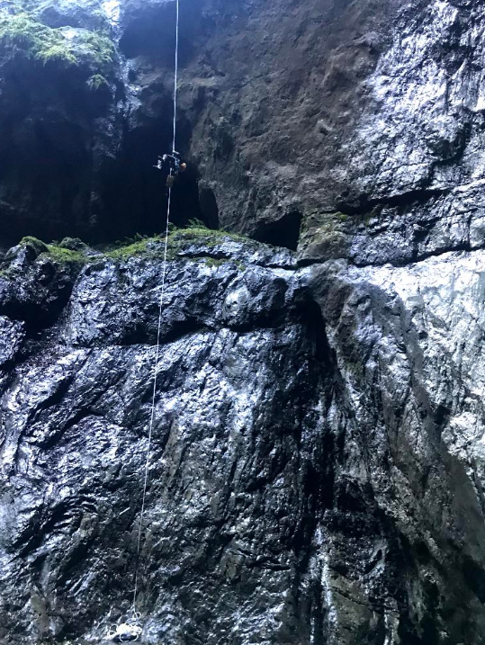

4 yıldır aktif olarak Hacettepe Üniversitesi Mağara Araştırma Kulübünde mağaracılık yapmaktayım. Bu kulübün amacı yeni mağaralar keşfetmek ve bunları haritalayarak mağaracılık literatürüne kazandırmak. Aşağıdaki fotoğraflar da daha önce girdiğim dikey ve yatay mağaralardan görseller.
